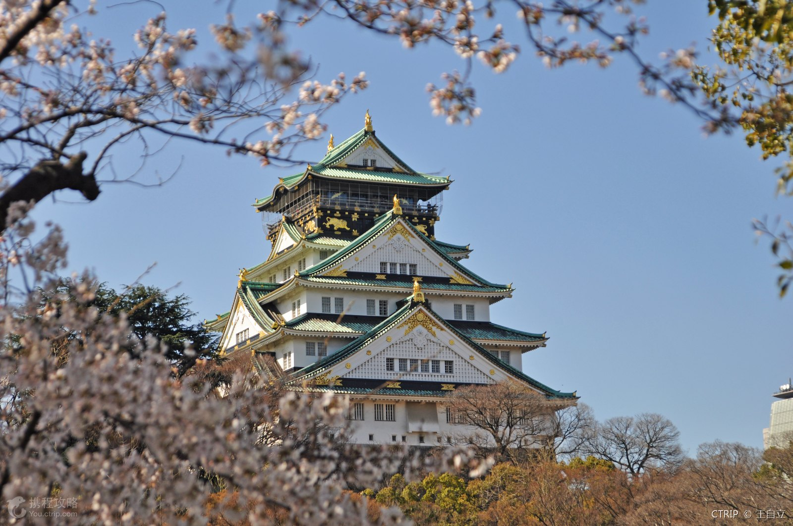
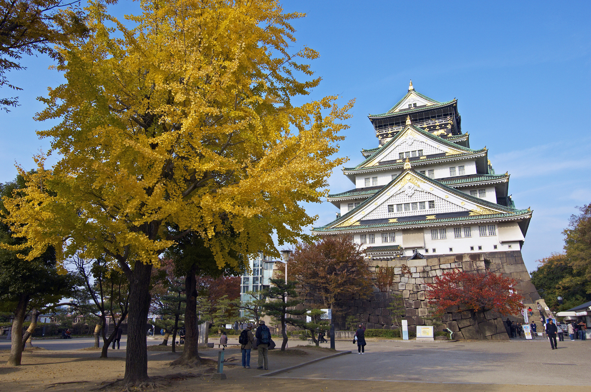
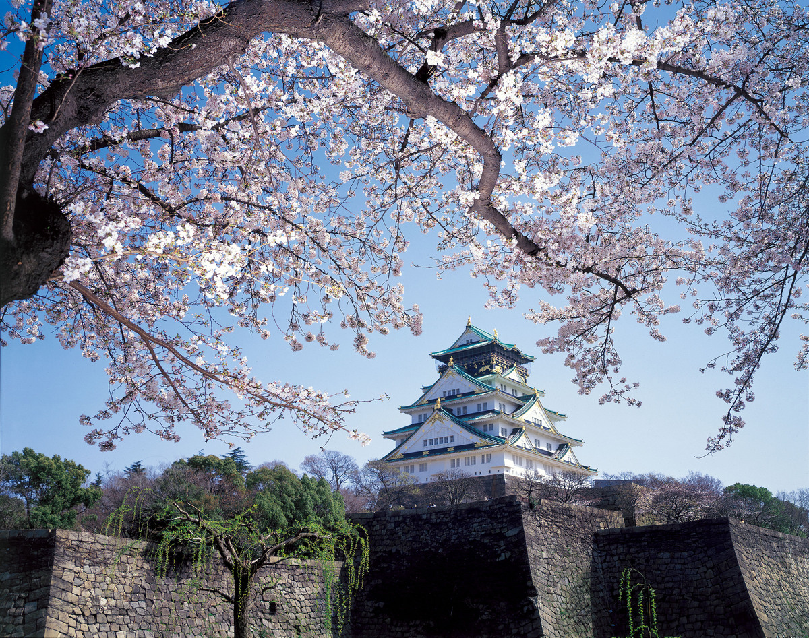
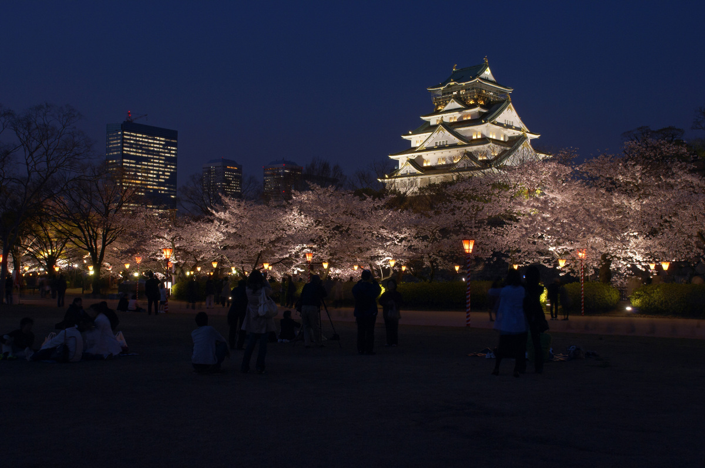
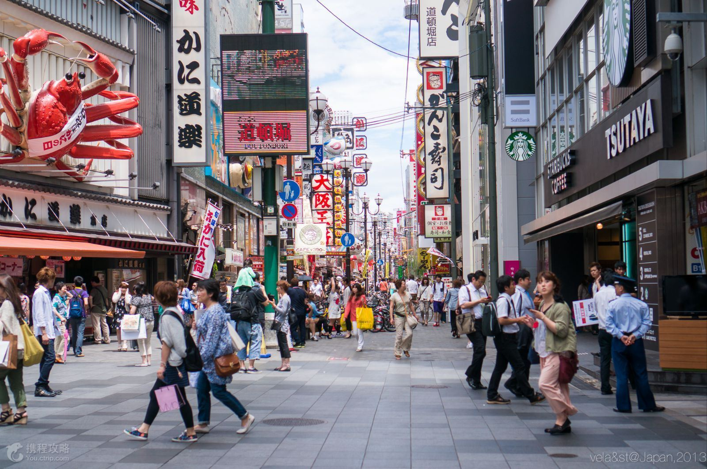
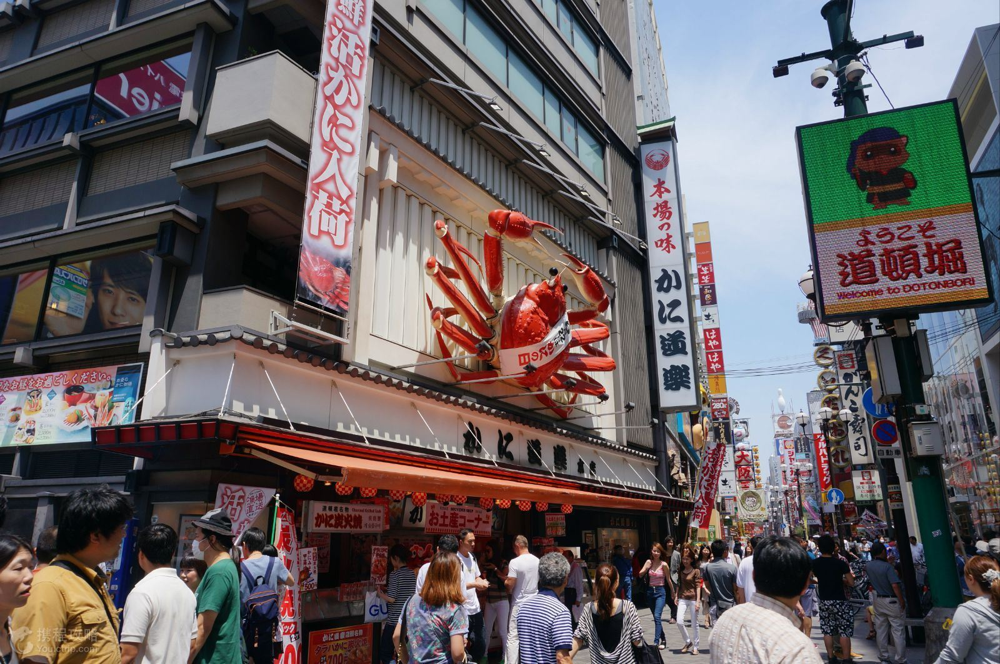
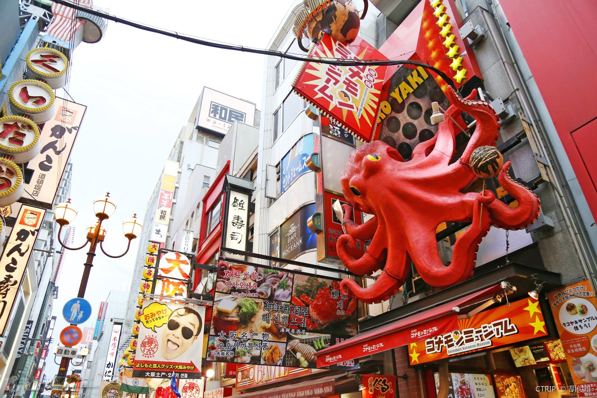

Osaka is my favorite city.
Go Home
The most popular places in Osaka.
Osaka Castle Park
I used to walk to Osaka Castle Park from my apartment which located two stops away. I walked at the park.
I coulde spend several hours just walking around. Standing at riverside watching fish swimming around, or
sitting at a bench observing tourists taking photo.


Osaka Castle Park is a place you definitely want to go especialy at Sakura season.


Shisaibashi Shopping street
Shisaibashi is next to my Japanese school, So, I went there a lot.
There are many restaurant offering delicious food, and drugstores selling all kinds of skin care staffs.
Chinese tourists spendt a lot of money there.



Umeda
One of my part time job is at Umeda Centre, I went there ridding bicycle in the morning. I discovered
different routs from my apartment to workplace. I got lost serveral time due to the streets at Umeda area are super complicated, it's easy
to get lost. You can go there by Metro, but there are 3 stations. There are many shopping malls. Products
of there are usually more expensive that in other place.